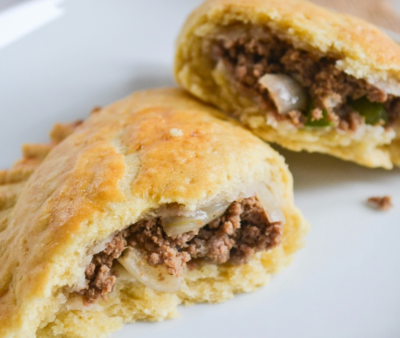

Team 5’s Cook Book
Recipies
Kendall's Bake Ziti Pasta
a>
Kwame's Ghanaian Meat Pies
Abdulaziz's
Kendrea's Baked Steak & Potatoes
Kori's
Synthia's
Leona's Chicken Alfredo
David's
Baron's
Kendall's Bake Ziti Pasta
Kwame's Ghanaian Meat Pies

Description
Flaky pastry filled with minced beef, onions and green peppers.
These meat pies are delicious and a popular Ghanaian snack.
Servings: 8 |
Prep Time: 1 hour |
Cook Time: 30 minutes |
Calories: 4127kcal |
Ingredients
Meat Pie Filling
- 1 tablespoon sunflower oil
- 300 grams, minced beef
- 1 medium onion, chopped
- ½ teaspoon, all purpose seasoning
- 1 small maggi stock cube
- Salt to taste
- 1 large green pepper, chopped into small cubes
Pastry
- 400 grams (3⅓ cups) self raising flour
- 255 grams (1 cup plus 1 tablespoon) cold margarine or butter
- Pinch of salt
- 60 ml (¼ cup) cold water
- 1 egg, whisked
Instructions
Minced Beef Filling
- Add a little oil to a large frying pan and heat up. Add the minced beef and onions and cook
on medium heat until it browns.
- Mix in tomato puree and cook for 2 minutes. Add in all purpose seasoning stock cube and salt.
Remove from heat and leave to cool, then stir in chopped green peppers.
Pastry
- Sift flour and salt into a large mixing bowl.
- Add margarine to the flour and rub in using your fingertips. Add the cold water and mix.
- Turn the dough onto a lightly floured work surface and knead very lightly.
- Shape the dough into a disk and wrap tightly in plastic wrap and refrigerate until well chilled, at least an hour or overnight.
To Assemble
- Pre-heat oven to 180°C fan/200°/400°F.
- Line a large baking tray with greaseproof paper.
- Lightly dusk a work surface and a rolling pin with flour. Roll out chilled dough.
(This should be carried out in short, sharp stroked with light even pressure in a forward movement only. Turn the pastry as you roll.)
- Using either a saucer or a large circle cutter, cut circles in the dough.
Place a quarter cup of filling in the centre of the circle.
- Fold dough over making it into a semicircle. Take a pastry brush and dip in water and moisten edges of dough circle then pinch sides together with a fork.
Use a fork and poke holes on the top of the meat pies.
- Place meat pies on the baking tray.
- Brush the tops of pies with egg wash and bake in oven for 25 minutes or until the pies are golden brown.
Nutrition Information
Calories: 4127kcal | Carbohydrates: 328.2g | Protein: 143.8g | Fat: 246.9g |
Saturated Fat: 44.2g | Cholesterol: 432mg | Sodium: 5009mg | Potassium: 2262mg |
Fiber: 16.1g | Sugar: 10.2g | Calcium: 209mg | Iron: 77mg |
Abdulaziz's
Kendrea's Baked Steak & Potatoes
Kori's
Synthia's
Leona's Chicken Alfredo
David's
Baron's